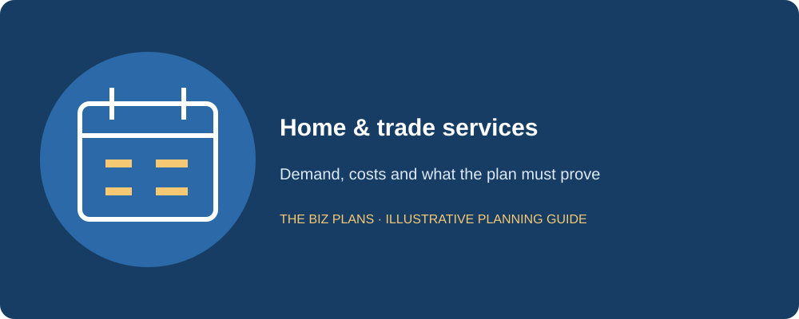
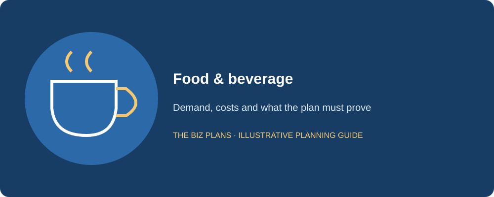
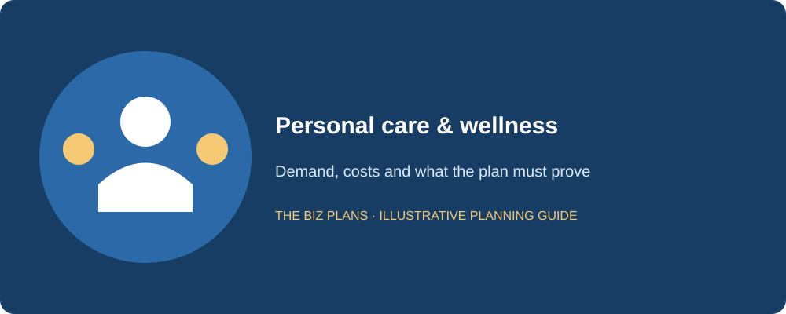
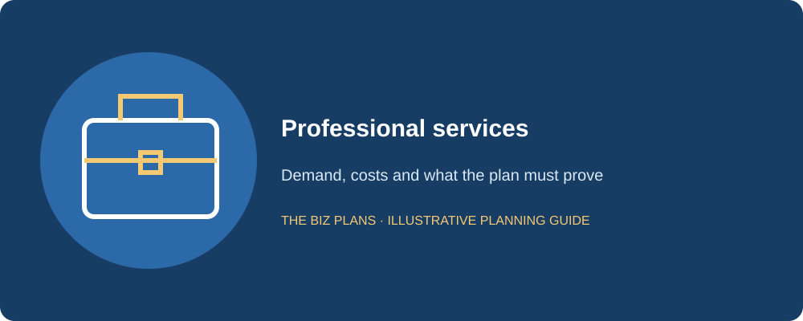
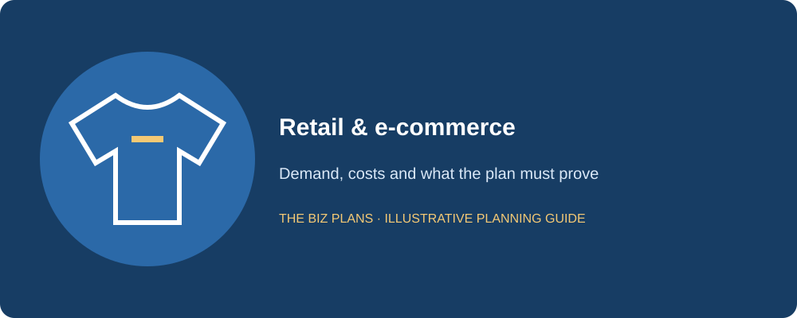
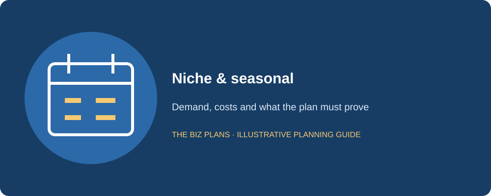

Small business ideas are useful only when you can turn them into a business that customers buy from and you can afford to operate. Ideas are cheap; the plan is the product. For a Toronto or Ontario founder, the practical questions arrive quickly: what must be bought before the first invoice, which skills or permissions are required, how customers will be found, and what happens when sales arrive later than expected. This guide screens 36 ideas through those questions; “vetted” means reviewed for planning considerations, not independently validated commercial opportunities.
For another way to compare options, explore 30 small business ideas for Canadian founders.
The best small business ideas for you depend on your experience, available cash, schedule and tolerance for uncertainty. A lower-cost service can still be difficult to finance without customers, while a business with equipment may need far more operating cash than its purchase list suggests. Review CSBFP, Futurpreneur and BDC resources for relevant financing routes, then confirm current eligibility and lender requirements. This guide offers no approval or income promises. Every startup-cost range and launch-timing example is illustrative, not market data. Replace them with your own quotations and validation before choosing a business. Start with one customer, one deliverable and a spending limit, then use paid feedback to decide your next step.
How to pick a small business idea
Startup cost: Add the equipment or website, permissions, insurance, deposits and operating reserve. Separate money available to invest from money needed for household bills. A cheap opening with no reserve can be riskier than a carefully funded larger one. Obtain quotes before comparing the ranges below as if they were prices.
Skills match: Choose work you can deliver safely and consistently. For regulated trades or services, confirm qualifications and scope before accepting a customer. Experience also affects estimates, quality and the ability to train a replacement; learning every critical skill after borrowing increases execution risk.
Time to first revenue: Identify the work between choosing the idea and collecting a payment. A service may invoice quickly but still face late payment. A food premises may require installation and approvals before trading. The table’s timing is an illustrative scenario beginning from a prepared launch, not a promise from today.
Financing difficulty: Ask what the proposed lender can assess: owner equity, credit, signed orders, cash generation and any acceptable security. The table’s Easy, Moderate and Hard labels compare illustrative preparation friction; Easy does not mean an easy loan, and Hard does not mean financing is unavailable. Confirm each institution’s criteria.
Scalability: Decide whether you want a skilled solo practice, a repeatable team service or a stocked operation. Growth may require more supervision, working capital and quality control before it adds cash. Profitable small business ideas are not inherently profitable categories; execution, cost structure and collected demand determine the result.
Home & trade services
Site work needs accurate estimates, travel planning, safety and permission checks. Smaller jobs can validate demand, but a crowded diary is not proof that each job contributes enough after travel and rework. Separate tools that enable delivery from vehicles or equipment bought mainly for appearance.

Residential painting
A small painting service can begin with tightly defined interior jobs and expand only after estimates and workmanship are dependable. Toronto projects may vary in access, preparation and scheduling, so measure those tasks rather than price by room alone. Deposits and materials must be handled under clear terms, and the owner needs a safe way to serve jobs consistently.
Illustrative startup cost: $4,000–$18,000 CAD (illustrative).
What the plan must prove: Job estimates, productive crew hours and the cash needed before final payment. Read the related planning guide.
Mobile welding
A mobile welding operator can serve repair or fabrication needs using equipment suited to a defined scope. Different assignments require different skills, safety procedures and customer acceptance, so avoid selling every possible type of welding. Travel, setup and inspection can consume much of a day before any welding is billed. Validate the customer base before financing a full equipment package.
Illustrative startup cost: $15,000–$60,000 CAD (illustrative).
What the plan must prove: Qualifications, insurable work, chargeable time and an equipment-supported repayment case. Read the related planning guide.
Plumbing service
A plumbing business can focus on repairs and scheduled service in a manageable area. The actual operator must hold or arrange the qualifications and permissions applicable to the work. Stock, dispatch and return visits need controls so the business does not promise immediate service without the parts or capacity to deliver. Build trust through reliable communication as well as technical quality.
Illustrative startup cost: $18,000–$70,000 CAD (illustrative).
What the plan must prove: Licensed delivery, callback risk, stocked parts and collection timing. Read the related planning guide.
HVAC maintenance
An HVAC service can combine planned maintenance with qualified repair work. Seasonal peaks can make demand attractive while placing pressure on dispatch, inventory and skilled labour. Check the actual scope and credentials before pricing services, and obtain supplier terms for essential parts. A repeat agreement has value only when its service obligation can be delivered within the crew calendar.
Illustrative startup cost: $25,000–$90,000 CAD (illustrative).
What the plan must prove: Seasonal capacity, qualified technicians and recurring-contract contribution. Read the related planning guide.
Landscape maintenance
A neighbourhood landscape service can test demand through a compact route and a limited service range. Residential maintenance differs from major installations in equipment, staffing and risk. Travel between customers and weather-related delays can erode a seemingly full schedule, so start with route density and actual job time. Avoid buying a large machinery fleet before the contracted work justifies it.
Illustrative startup cost: $6,000–$35,000 CAD (illustrative).
What the plan must prove: Route contribution, equipment utilization and a funded off-season. Read the related planning guide.
Residential cleaning
A cleaning service can begin with standard visits and a clearly described scope. Reliability, insurance, safe product handling and access to homes matter as much as low equipment cost. Travel and rescheduling reduce productive time, while expansion adds hiring and supervision obligations. Test repeat bookings and the cost of quality checks before assuming every cleaner can serve a full calendar.
Illustrative startup cost: $1,500–$8,000 CAD (illustrative).
What the plan must prove: Repeat demand, paid travel time, staff reliability and rework costs. Read the related planning guide.
Food & beverage
Food businesses need a safe production and service model, verified local requirements and waste-aware costing. Test the contribution after labour, packaging, delivery and venue fees. A compact menu and a funded delay case can be more valuable than a broad launch range.

Food truck
A food truck can serve booked events and approved lunch locations with a compact menu. The vehicle is only one part of the business: permissions, preparation access and secured trading opportunities determine whether it can earn. In a seasonal GTA model, quiet months still incur cash obligations. Inspect the fitted asset and test the booking calendar before committing to the purchase.
Illustrative startup cost: $90,000–$150,000 CAD (illustrative).
What the plan must prove: Confirmed locations, service capacity and winter cash survival. Read the related planning guide.
Neighbourhood bakery
A bakery can combine walk-in retail with scheduled wholesale orders, but the two channels have different margins and payment timing. Skilled early shifts, oven capacity and waste control need to be planned together. A wholesale account can increase volume while tying up cash in invoices. Obtain installed equipment quotes and test realistic batches before treating a café pipeline as contracted sales.
Illustrative startup cost: $110,000–$190,000 CAD (illustrative).
What the plan must prove: Yield, skilled staffing, channel contribution and café receivables. Read the related planning guide.
Specialty coffee shop
A coffee shop can build repeat visits around a specific location and service promise. Small tickets require enough frequency, while occupancy and payroll remain payable during quiet periods. Foot-traffic observations must be tied to the proposed entrance and dayparts rather than a broad neighbourhood count. Compare machine purchase and lease costs and test a lower-volume case before signing a long lease.
Illustrative startup cost: $130,000–$210,000 CAD (illustrative).
What the plan must prove: Daily tickets, daypart staffing, rent affordability and cash breakeven. Read the related planning guide.
Small-event catering
A catering business can begin with a defined event size and menu delivered from an appropriate preparation setting. Booking terms should specify guests, service, deposits, cancellation and what the venue provides. Ingredient margin alone misses staffing, transport, setup and cleanup. Test a small commercial event and document the full delivery cost before promising multiple simultaneous bookings.
Illustrative startup cost: $8,000–$40,000 CAD (illustrative).
What the plan must prove: Safe production, event contribution and deposit-backed capacity. Read the related planning guide.
Prepared-meal service
A meal-preparation service can serve a narrow customer group with a predictable ordering cutoff. Safe production, storage and delivery need to fit the actual menu and local requirements. Subscription wording does not guarantee retention, and missed deliveries or unused stock can destroy contribution. Validate repeat orders and the route before purchasing large amounts of packaging or kitchen capacity.
Illustrative startup cost: $10,000–$45,000 CAD (illustrative).
What the plan must prove: Repeat demand, cold-chain control, portion costs and delivery economics. Read the related planning guide.
Casual restaurant
A casual restaurant offers a fuller service experience but commits substantial cash before the first guest arrives. Lease conditions, kitchen installation and operator coverage need attention alongside the concept. A lender will test whether covers, guest spend and labour support repayment, especially during the opening ramp. Obtain site-specific quotes and reserve working cash rather than treat a busy dining-room image as demand evidence.
Illustrative startup cost: $280,000–$380,000 CAD (illustrative).
What the plan must prove: Lease exposure, prime cost, operator experience and breakeven covers. Read the related planning guide.
Personal care & wellness
These businesses rely on trust, service consistency and appointments that fit actual practitioner capacity. Confirm training, insurance and any regulated scope. Review no-shows, consumables and retention before describing a booked schedule as stable income.

Esthetician studio
An esthetician practice can begin with a focused treatment range suited to the operator’s training and premises. Equipment purchases should match demonstrated demand rather than a broad menu of services. Appointments, sanitation, consumables and client consent require repeatable procedures. Validate repeat bookings and treatment contribution before expanding rooms or staff, and confirm local requirements for the actual activities.
Illustrative startup cost: $8,000–$40,000 CAD (illustrative).
What the plan must prove: Training, appointment utilization, safe service and repeat customer demand. Read the related planning guide.
Barbershop
A barbershop can build recurring visits around location, skilled service and a reliable booking experience. A multi-chair model adds lease, staffing and supervision commitments before all chairs are occupied. Choose whether the actual arrangement uses employees, contractors or chair rental only after appropriate advice. Forecast utilization by chair and service duration, rather than assume published opening hours are all revenue-producing time.
Illustrative startup cost: $25,000–$95,000 CAD (illustrative).
What the plan must prove: Chair utilization, staffing arrangements and repeat-visit contribution. Read the related planning guide.
Mobile massage practice
A mobile massage practice can serve clients without a permanent storefront when the practitioner has the qualifications required for the proposed service. Travel, setup, safety and privacy reduce appointments that fit in a day. Review professional scope and insurance before marketing, and use a clear booking and cancellation process. Demand validation should distinguish convenience interest from clients willing to book at a sustainable price.
Illustrative startup cost: $3,000–$15,000 CAD (illustrative).
What the plan must prove: Qualified scope, travel-adjusted capacity and reliable appointment demand. Read the related planning guide.
Fitness coaching
A fitness coach can start with a narrow audience and a defined format, such as small sessions or individual coaching. Training, insurance, participant screening and appropriate facility permissions remain necessary even without a large gym lease. Selling a program also creates a delivery commitment over time. Test attendance and renewal rather than assume a launch group becomes permanent recurring revenue.
Illustrative startup cost: $1,000–$8,000 CAD (illustrative).
What the plan must prove: Safe delivery, paid capacity, retention and acquisition costs. Read the related planning guide.
Nail studio
A nail studio can differentiate through dependable quality, appointment experience and a focused service range. Premises suitability, sanitation, ventilation and product handling need review for the actual operation. Consumables and rework must appear in the contribution calculation, while staffing must cover demand without relying on every appointment arriving on time. Test repeat booking and service duration before financing additional stations.
Illustrative startup cost: $12,000–$65,000 CAD (illustrative).
What the plan must prove: Station utilization, consumables, rework and compliant premises. Read the related planning guide.
Wellness workshops
A workshop business can deliver bounded educational sessions to individuals or organizations within the facilitator’s competence. Avoid medical or therapeutic claims that exceed qualifications, and use clear participant expectations. Venue hire, preparation and cancellation risk remain costs even if the materials are inexpensive. Begin with paid pilot sessions and record participant feedback and repeat organizational demand.
Illustrative startup cost: $1,500–$10,000 CAD (illustrative).
What the plan must prove: A credible scope, paid attendance and fully costed session delivery. Read the related planning guide.
Turn an idea into a structured draft
Use your own customer, operating and funding inputs, then verify the evidence behind the result.
Open the free AI generatorProfessional services
Low physical-asset requirements do not remove working-capital needs. Count selling, administration and review time before projecting billable hours, and model the gap between invoicing and collection. Contracts should define scope, acceptance and responsibility for confidential data.

Bookkeeping support
A bookkeeping service can focus on routine records and reporting for a defined client type, within the operator’s competence. Accuracy, confidentiality, software controls and clear limits on regulated advice are essential. Monthly packages need enough time for reconciliation and review, not just data entry. Validate client willingness to pay and the records they can actually provide before promising an efficient repeat process.
Illustrative startup cost: $1,500–$7,000 CAD (illustrative).
What the plan must prove: Qualified scope, review controls and recurring-fee delivery time. Read the related planning guide.
Marketing agency
A small marketing agency can begin with one deliverable or customer niche rather than promise every channel. Scope, client approvals and freelancer costs determine project contribution. Client advertising budgets should be distinguished from the agency’s own revenue and fees. Obtain paid pilot evidence and a qualified pipeline before hiring a broad team or forecasting automatic retainer renewals.
Illustrative startup cost: $3,000–$18,000 CAD (illustrative).
What the plan must prove: Realized fees, scoped work, subcontractor costs and client retention. Read the related planning guide.
Management consulting
A consultancy can translate professional experience into defined diagnostics, projects or retainers for businesses. The scarce resource is credible delivery time, and winning work consumes time that cannot also be billed. Corporate collection delays can require funding despite few tangible assets. Start with qualified opportunities and scoped paid work, and document the backup plan if the founder is unavailable.
Illustrative startup cost: $18,000–$35,000 CAD (illustrative).
What the plan must prove: Utilization, qualified pipeline, concentration and receivables funding. Read the related planning guide.
Web design studio
A web design studio can sell a clear project outcome to a specific type of customer. Discovery, content collection, revisions, testing and handover all consume delivery time. Maintenance agreements can support recurring work, but their scope and response obligations must be costed. Use staged acceptance and payment terms, and validate a portfolio and pipeline without presenting unpaid demonstration sites as contracted customers.
Illustrative startup cost: $2,000–$12,000 CAD (illustrative).
What the plan must prove: Scoped delivery hours, revision control and milestone collection. Read the related planning guide.
Financial modelling service
A financial modelling practice can support business planning and management decisions within the operator’s qualifications. Data quality, assumptions, review and limits on use deserve as much attention as spreadsheet speed. Regulated advice should not be offered without the required authority. Test a paid scope, establish version control and show how review time and specialist assistance affect realized project contribution.
Illustrative startup cost: $3,000–$15,000 CAD (illustrative).
What the plan must prove: Competence, model review, clear use limits and scoped contribution. Read the related planning guide.
Virtual assistant service
A virtual assistant can offer a bounded administrative service to a defined customer group. Scheduling, inbox access and record handling require clear authority and privacy controls. The business must price availability, interruption and handover work rather than bill only visible task minutes. Begin with a small paid package, test client retention and establish a practical substitute process before promising continuous support.
Illustrative startup cost: $1,000–$6,000 CAD (illustrative).
What the plan must prove: Secure access, realistic capacity and repeat package economics. Read the related planning guide.
Retail & e-commerce
Inventory is cash committed before demand is certain. Separate purchases, sales, returns and write-downs, then show how the next order is funded. Channels with different prices and payment timing should have separate contribution calculations.

Clothing line
A clothing line can begin with a compact capsule and evidence-based size allocation. Minimum quantities, samples and production deposits make a launch more capital-intensive than the online store alone suggests. Direct and wholesale channels need different margins and collection assumptions. Paid test orders and disclosed pre-sales can validate demand, but refundable customer money also creates obligations that must be funded.
Illustrative startup cost: $45,000–$85,000 CAD (illustrative).
What the plan must prove: Size sell-through, landed cost, channel margins and replenishment cash. Read the related planning guide.
Pet supplies shop
A pet-supplies retailer can focus on a useful assortment for a defined local or online customer. Stock breadth, expiry, storage and slow-moving items can consume cash before repeat buyers develop. If the operation adds grooming or other services, those activities need their own qualifications, staffing and economics. Begin with demand evidence and supplier terms rather than assume a large catalogue ensures sales.
Illustrative startup cost: $20,000–$90,000 CAD (illustrative).
What the plan must prove: Stock turns, supplier terms and contribution by product or service. Read the related planning guide.
Specialty grocery
A specialty grocery can serve a customer need that broader retailers do not meet consistently. Perishable stock, refrigeration, supplier delivery and customer frequency matter as much as the range. A neighbourhood hypothesis needs observations and interviews before a lease commitment. Cost spoilage and staff handling explicitly, and test whether the planned basket contribution supports occupancy and replenishment.
Illustrative startup cost: $50,000–$180,000 CAD (illustrative).
What the plan must prove: Basket economics, spoilage, cold storage and replenishment funding. Read the related planning guide.
Curated online store
A curated online store can focus on a narrow assortment with a clear reason for customers to choose it. Buying stock and building a site are different tasks from winning profitable orders. Fulfilment, platform charges, returns and advertising can absorb the headline product margin. Test a small commercial assortment, measure net contribution and confirm supplier reliability before broadening the range.
Illustrative startup cost: $5,000–$25,000 CAD (illustrative).
What the plan must prove: Acquisition cost, returns, fulfilment and cash tied up in stock. Read the related planning guide.
Stationery and gift shop
A stationery and gift shop can combine everyday utility with a selected seasonal range. Location and buying discipline affect whether stock sells before its occasion passes. Personalized items may add value while increasing handling time and returns constraints. Test assortment demand and supplier lead times, then show how unsold seasonal items will be marked down without consuming the next buying budget.
Illustrative startup cost: $15,000–$65,000 CAD (illustrative).
What the plan must prove: Assortment turnover, seasonal markdowns and occupancy contribution. Read the related planning guide.
Indoor plant shop
A plant retailer can serve local buyers through a focused range and practical care information. Stock condition changes during storage, so loss, space and care labour belong in the model. Delivery and packaging need testing for the actual products and season. Begin with a small paid range and supplier-quality checks before assuming every purchased plant can sell at full price.
Illustrative startup cost: $12,000–$50,000 CAD (illustrative).
What the plan must prove: Living-stock loss, care labour and reliable repeat supply. Read the related planning guide.
Niche & seasonal
A seasonal idea needs the full-year cash calendar, not just a busy-month margin. Equipment may sit unused while insurance, storage and financing remain payable. Bookings, weather contingencies and safe delivery should determine the purchase plan.

Snow removal
A snow-removal service can sell a defined route and response commitment to suitable customers. Weather creates uncertain work volume, while contracts may require availability regardless of how often it snows. Review safety, insurance, equipment backup and any requirements for the proposed sites. Price the actual contract obligations and preserve off-season cash before financing a vehicle or large machinery package.
Illustrative startup cost: $8,000–$45,000 CAD (illustrative).
What the plan must prove: Route capacity, weather scenarios and response obligations. Read the related planning guide.
Pressure washing
A pressure-washing service can begin with surfaces and jobs the operator can clean safely. Damage risk, water access, runoff requirements and site permissions must be checked before accepting work. Travel, setup and packing reduce chargeable hours, while weather can move appointments. Test estimates and results on appropriate paid jobs, and avoid promising every surface can be treated with one machine or process.
Illustrative startup cost: $3,000–$16,000 CAD (illustrative).
What the plan must prove: Safe scope, damage controls and travel-adjusted job contribution. Read the related planning guide.
Event rentals
An event-rental business can stock a narrow range of equipment used by a defined customer type. Storage, delivery, cleaning, damage and return timing determine whether an asset earns enough across its usable life. Deposits and contracts need clear conditions, but they do not eliminate replacement risk. Validate actual bookings and weekend capacity before purchasing a catalogue of items with little repeated demand.
Illustrative startup cost: $15,000–$70,000 CAD (illustrative).
What the plan must prove: Asset utilization, handling costs, damage and peak-date capacity. Read the related planning guide.
Mobile car detailing
A mobile detailing service can offer a bounded package with convenient delivery at approved sites. Water, power, weather, runoff and customer access affect the actual operating model. Product costs may be modest while travel and setup reduce the number of jobs possible. Test service time and quality, confirm local conditions and build repeat demand before investing in a fully fitted vehicle.
Illustrative startup cost: $4,000–$22,000 CAD (illustrative).
What the plan must prove: Site feasibility, job duration, weather exposure and repeat contribution. Read the related planning guide.
Holiday decorating
A holiday-decorating service can serve a selected customer group with a defined installation and removal package. Safety, access, storage and equipment responsibilities need clear terms, especially for elevated work. Most sales may cluster around a short calendar, so a strong week does not prove full-year viability. Cost removal and storage before quoting, and distinguish customer-owned materials from business stock.
Illustrative startup cost: $3,000–$18,000 CAD (illustrative).
What the plan must prove: Safe delivery, removal obligations and annual cash coverage. Read the related planning guide.
Small-equipment repair
A repair business can focus on equipment the operator is qualified and equipped to service. Parts availability, diagnostic time and customer acceptance determine realized contribution. Some jobs may be uneconomic once waiting time and return visits are counted. Start with a defined scope, supplier access and paid demand, and keep appropriate records and warranties rather than promising every damaged item can be repaired.
Illustrative startup cost: $7,000–$35,000 CAD (illustrative).
What the plan must prove: Competent scope, diagnostic recovery, parts supply and turnaround. Read the related planning guide.
Compare the small business ideas
All cost ranges and timing examples below are illustrative scenarios, not quoted prices or measured national averages. Timing begins from a prepared launch and still depends on permissions, readiness and customer acquisition. The financing labels compare planning friction for these scenarios, not approval likelihood. Use the sortable headings to explore the list, then replace the assumptions with your own before shortlisting. On smaller screens, scroll the table sideways to view all four columns.
| Idea | Illustrative startup cost | Illustrative time to first revenue | Financing difficulty |
|---|---|---|---|
| Residential painting | $4,000–$18,000 CAD (illustrative) | 1–4 weeks | Moderate |
| Mobile welding | $15,000–$60,000 CAD (illustrative) | 2–8 weeks | Hard |
| Plumbing service | $18,000–$70,000 CAD (illustrative) | 2–8 weeks | Hard |
| HVAC maintenance | $25,000–$90,000 CAD (illustrative) | 3–10 weeks | Hard |
| Landscape maintenance | $6,000–$35,000 CAD (illustrative) | 1–6 weeks | Moderate |
| Residential cleaning | $1,500–$8,000 CAD (illustrative) | 1–4 weeks | Easy |
| Food truck | $90,000–$150,000 CAD (illustrative) | 2–6 months | Hard |
| Neighbourhood bakery | $110,000–$190,000 CAD (illustrative) | 3–7 months | Hard |
| Specialty coffee shop | $130,000–$210,000 CAD (illustrative) | 3–7 months | Hard |
| Small-event catering | $8,000–$40,000 CAD (illustrative) | 3–10 weeks | Moderate |
| Prepared-meal service | $10,000–$45,000 CAD (illustrative) | 4–12 weeks | Moderate |
| Casual restaurant | $280,000–$380,000 CAD (illustrative) | 4–9 months | Hard |
| Esthetician studio | $8,000–$40,000 CAD (illustrative) | 3–10 weeks | Moderate |
| Barbershop | $25,000–$95,000 CAD (illustrative) | 2–5 months | Moderate |
| Mobile massage practice | $3,000–$15,000 CAD (illustrative) | 2–8 weeks | Moderate |
| Fitness coaching | $1,000–$8,000 CAD (illustrative) | 1–6 weeks | Easy |
| Nail studio | $12,000–$65,000 CAD (illustrative) | 1–4 months | Moderate |
| Wellness workshops | $1,500–$10,000 CAD (illustrative) | 2–8 weeks | Easy |
| Bookkeeping support | $1,500–$7,000 CAD (illustrative) | 2–8 weeks | Easy |
| Marketing agency | $3,000–$18,000 CAD (illustrative) | 2–10 weeks | Moderate |
| Management consulting | $18,000–$35,000 CAD (illustrative) | 4–16 weeks | Moderate |
| Web design studio | $2,000–$12,000 CAD (illustrative) | 2–8 weeks | Easy |
| Financial modelling service | $3,000–$15,000 CAD (illustrative) | 3–10 weeks | Moderate |
| Virtual assistant service | $1,000–$6,000 CAD (illustrative) | 1–6 weeks | Easy |
| Clothing line | $45,000–$85,000 CAD (illustrative) | 3–7 months | Hard |
| Pet supplies shop | $20,000–$90,000 CAD (illustrative) | 2–5 months | Moderate |
| Specialty grocery | $50,000–$180,000 CAD (illustrative) | 3–7 months | Hard |
| Curated online store | $5,000–$25,000 CAD (illustrative) | 1–4 months | Moderate |
| Stationery and gift shop | $15,000–$65,000 CAD (illustrative) | 2–5 months | Moderate |
| Indoor plant shop | $12,000–$50,000 CAD (illustrative) | 1–4 months | Moderate |
| Snow removal | $8,000–$45,000 CAD (illustrative) | 1–8 weeks in season | Moderate |
| Pressure washing | $3,000–$16,000 CAD (illustrative) | 1–6 weeks in season | Easy |
| Event rentals | $15,000–$70,000 CAD (illustrative) | 1–4 months | Moderate |
| Mobile car detailing | $4,000–$22,000 CAD (illustrative) | 1–6 weeks | Moderate |
| Holiday decorating | $3,000–$18,000 CAD (illustrative) | 2–8 weeks in season | Easy |
| Small-equipment repair | $7,000–$35,000 CAD (illustrative) | 2–10 weeks | Moderate |
Which idea fits you?
Use these five questions to narrow the categories, then choose a small paid test. They are planning prompts, not a recommendation engine or evidence that an idea will succeed. If your answers conflict, reduce the launch scope instead of stretching the cost range to fit a desired business.
1. How much capital can you commit after household reserves?
With a limited reserve, begin exploring professional services, home services and personal care formats that fit existing skills. With more available capital, compare food and retail, while checking how much remains tied up before sales.
2. Which work can you already deliver competently?
Trade experience points toward home and trade services or repair and seasonal work. Office expertise points toward professional services; qualified client-service experience may fit personal care. For any choice, confirm the actual credentials and scope rather than assume experience removes permission requirements.
3. Is this full-time or alongside employment?
A bounded side project may be easier to test in professional services, selected seasonal services or a small online assortment. A food premises or daily appointment schedule may require fuller availability. Review your existing contract, conflicts and capacity before taking client work.
4. How comfortable are you with physical work?
If physical delivery fits your health and skills, compare home services, food operations and seasonal work, with their safety and travel needs. If a desk-based model suits you better, examine professional services or appropriate e-commerce roles, while remembering fulfilment can still be physical.
5. Which uncertainty can you afford?
If large irreversible commitments are uncomfortable, test a limited service package or small job scope. If you can fund stock and a slower launch, examine retail; if you can carry approvals and occupancy, compare food. Each category still needs a downside case and a clear stop-or-change decision.
Validate the idea before seeking financing
Choose one customer and one paid offer, then define a small test with a time and spending limit. Record what the customer bought, the work required and the cash collected. Interest expressed in an interview is useful, but a paid trial can reveal delivery cost and willingness to return. Ask permission before using any customer’s experience in marketing.
Build a monthly cash forecast with setup, payroll, stock or receivables, taxes and borrowing payments. Review the CRA’s GST/HST registration guidance: the $30,000 small-supplier threshold and the registration date depend on how and when taxable revenue is earned, including associated businesses where relevant. Do not treat tax collections as sales or personal income. Confirm employment, insurance, licensing and WSIB obligations for the actual activities.
Then ask your prospective lender or program for its current checklist. Show owner equity, quote-backed costs, qualified demand and the repayment source, and distinguish an operating-line limit from cash already drawn. Program resources are preparation tools, not promises of eligibility. Keep a clear record of changes between the test, written plan and forecast so the business does not become more expensive without a corresponding funding decision.
Small business ideas FAQs
What is the best small business to start in Canada?
There is no single best business for every Canadian founder. Choose an idea that matches your skills, available cash, customer access and schedule, then test whether people will pay for a deliverable you can provide consistently. Compare the full opening budget, time to collection and downside risk rather than a fashionable category name. The ideas here are screened for planning considerations, not validated opportunities. A small paid test and a quote-backed forecast are more useful than a general ranking of attractive industries.
What business can I start with $10,000?
An illustrative $10,000 budget may support some small cleaning, coaching, administrative or professional-service formats when you already have the required skills and equipment. It does not guarantee that every example fits your location or qualifications. Preserve household and operating reserves, obtain insurance and software quotes, and confirm any permissions before accepting work. Start with a bounded paid service and measure contribution and collection timing. Avoid spending the entire amount on branding or tools before demand is tested and delivery can be repeated.
Which small businesses are most profitable?
Profitability depends on realized prices, cost control, capacity, customer retention and cash collection. A high gross margin can disappear after owner compensation, marketing, travel, rework or financing costs. No unsourced category-wide profit ranking is offered here. Build a model for your specific idea, include the cost of replacing your own work and test lower demand. Also distinguish accounting profit from cash available after stock purchases, receivables and debt principal. The most suitable idea is one whose economics you can evidence and sustain.
Do I need a business plan for a small business loan in Canada?
Lenders commonly request a plan and projections for startup financing, but the documents depend on the institution, facility and borrower. Ask for the current checklist before applying. Prepare the customer evidence, owner résumé, equity contribution, quote-backed costs and repayment case alongside linked financial statements. Existing businesses may need historical records as well. CSBFP, Futurpreneur and BDC resources can help you explore routes, but each has conditions to confirm. A completed plan supports assessment; it does not guarantee financing.
What is the easiest business to start with no money?
No business is completely cost-free. A skill-based service using equipment you already own may require less upfront spending, but time, insurance, software, permissions and the ability to cover household bills still matter. Begin with a small paid scope within your competence and confirm the delivery costs before committing to clients. Do not describe future customer deposits as free capital without understanding the obligations they create. If you cannot fund a safe, reliable launch, reduce the scope or build a reserve first.
Where can I get help writing the plan?
The Biz Plans offers Canadian business plan writing and financial modelling led by Atul Jagga, CPA Ontario, in Toronto. Bring your shortlist, customer-test results, cost quotations, skills, available equity and financing goal so the work can focus on an actual decision. Review the business plan services and contact the team to discuss the scope. You can also organize an initial draft with the free generator, then verify the underlying evidence. Professional preparation does not guarantee a lender’s approval.
About the author

Written by Atul Jagga, CPA Ontario — Founder of The Biz Plans, Toronto. MBA Finance & Strategy (UBC); 20+ years in corporate finance and consulting involving RBC, BMO, and CIBC. Since 2016, Atul has written bank-financing and investor business plans for Canadian startups and small businesses.
Build a plan around your actual business
Discuss your evidence, operating assumptions and financing goal with The Biz Plans.
Contact The Biz Plans